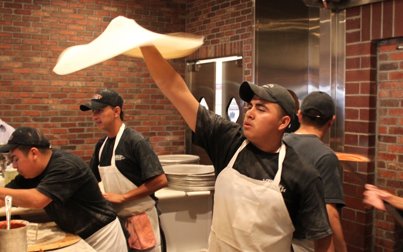
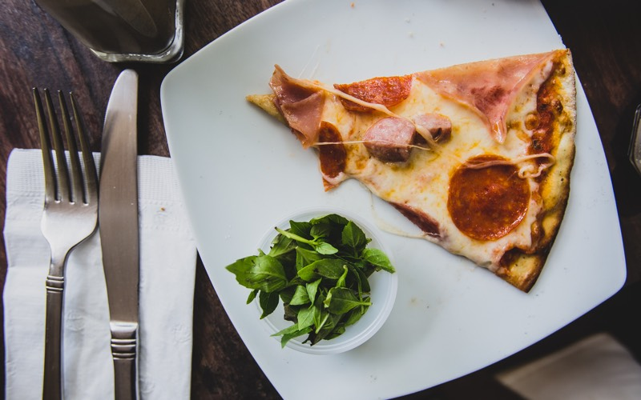

The history of pizza begins in antiquity, when various ancient cultures produced flatbreads with toppings.
The word pizza was first documented in AD 997 in Gaeta and successively in different parts of Central and Southern Italy. The precursor of pizza was probably the focaccia, a flat bread known to the Romans as panis focacius, to which toppings were then added.
Modern pizza developed in Naples, when tomato was added to the focaccia in the late 18th century. However, pizza was mainly eaten in the country of Italy and by immigrants from there. This changed after World War II, when Allied troops stationed in Italy came to enjoy pizza along with other Italian foods.

Make an Italian pizza
(makes dough for 4 pizzas, each one about 12 inches in diameter)
Ingredients
- 600 mL of warm water
- 7 cups (1kg) flour
- 2.5 – 3 tablespoons (25 grams) of fresh yeast or 2 teaspoons (7-8 grams) of dried yeast
- 6 tablespoons of extra virgin olive oil
- 1.5 teaspoons salt
- 2 teaspoons sugar
Method
Sprinkle the yeast into a medium bowl with the warm water. We don’t mean hot, and we don’t mean cold… we mean warm! That’s the kind the yeast likes best. Stir until the yeast dissolves.
Place almost all of the flour on the table in the shape of a volcano. (Think Mt. Vesuvius… appropriate since Naples is the king of all pizza cities!).
Pour the yeast-and-warm-water mix, along with the other ingredients, into the “crater” of the volcano.
Knead everything together for 10 to 15 minutes until the dough is smooth and elastic, keeping your surface floured.
Grease up a bowl with some olive oil and put the dough inside. Turn the dough around so the top is slightly oiled.
Cover the bowl and put the dough aside to let it rest for at least four or five hours.
(optional for those who want their pizza really authentic). Make a cross on top of the dough with a knife. An old Italian tradition, this is seen as a way of “blessing the bread.”
Preheat the oven to about 400°F, or about 200°C.
Dump the dough out of the bowl and back onto the floured surface. Punch it down, getting rid of any bubbles. (Note: Now’s the time to enlist a kid with more energy than they know what to do with!).
Divide the dough in half and let it rest for a few minutes.
Roll each section into a 12-inch disc. Now’s your chance to decide how thick you want your pizza to be! Do you want it pizza alta (Neapolitan-style) or pizza bassa (Roman-style)? Just remember, your crust will puff up a little bit as it’s baked!
Transfer the dough onto an oiled pizza pan or baking sheet.
Add tomato sauce, if you want a pizza rossa (red pizza). Lots of pizzas in Italy are actually pizza bianca, without tomato sauce, so don’t feel like you have to! Brush the edges of the crust with a little bit of olive oil.
Bake each pizza for about 10 minutes, then add mozzarella cheese (sliced or grated) on top, as well as any other ingredients.
Let the pizzas bake until the crust is browned and the cheese is melted. By lifting up the pizza to peek underneath, you can make sure the bottom has browned, too.
Remove your pizzas from the oven and, for a real Italian touch, garnish with a few basil leaves. And enjoy!
More info about pizza can be found on Wikipedia. Recipe from Walks Of Italy.